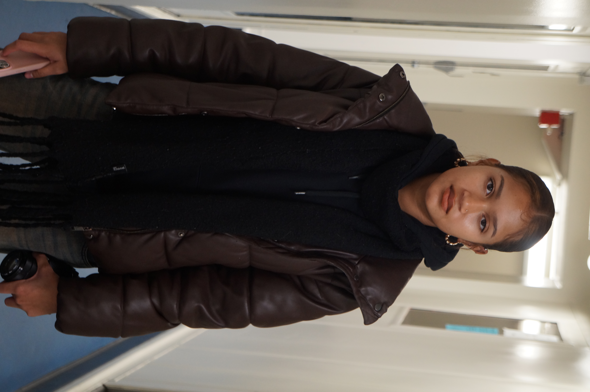
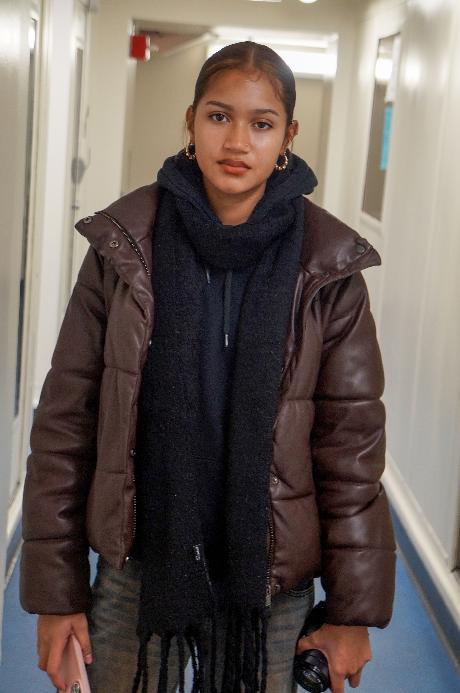
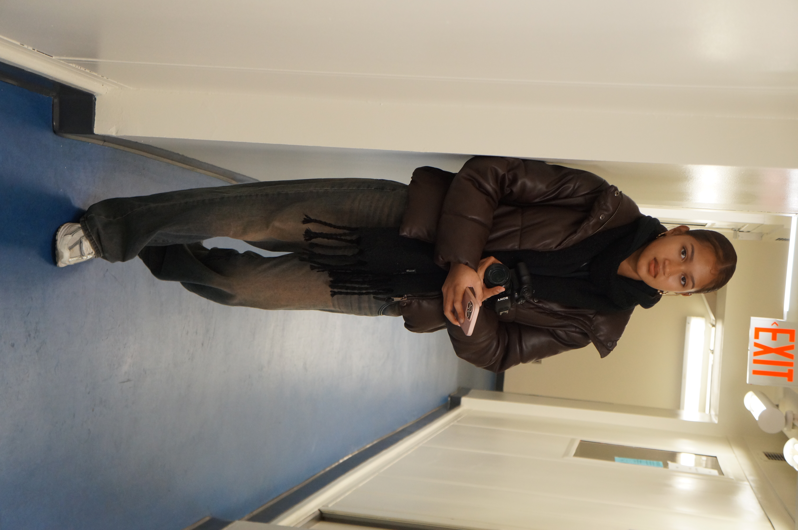
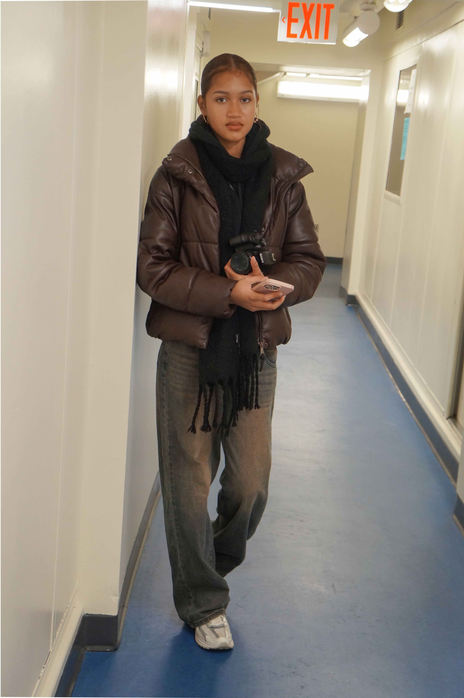

Shallow Depth of Field
 In this image, I used a wide aperture to create a shallow depth of field. The subject is in focus while the background appears blurred, creating visual separation and emphasis.
Deep Depth of Field
 For this image, I used a smaller aperture and adjusted shutter speed and ISO to maintain exposure. The result keeps both foreground and background in focus, creating a deep depth of field.